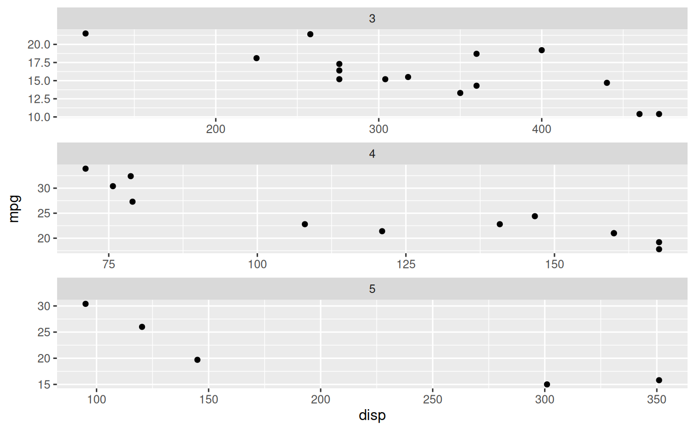

These facets are one-dimensional versions of ggplot2::facet_wrap(),
arranging the panels in either a single row or a single column. This
restriction makes it possible to support a space argument as seen in
ggplot2::facet_grid() which, if set to "free" will allow the panels to be
sized based on the relative range of their scales. Another way of thinking
about them are one-dimensional versions of ggplot2::facet_grid() (ie.
. ~ {var} or {var} ~ .), but with the ability to position the strip at
either side of the panel. However you look at it it is the best of both world
if you just need one dimension.
Usage
facet_row(
facets,
scales = "fixed",
space = "fixed",
shrink = TRUE,
labeller = "label_value",
drop = TRUE,
strip.position = "top"
)
facet_col(
facets,
scales = "fixed",
space = "fixed",
shrink = TRUE,
labeller = "label_value",
drop = TRUE,
strip.position = "top"
)Arguments
- facets
A set of variables or expressions quoted by
vars()and defining faceting groups on the rows or columns dimension. The variables can be named (the names are passed tolabeller).For compatibility with the classic interface, can also be a formula or character vector. Use either a one sided formula,
~a + b, or a character vector,c("a", "b").- scales
Should scales be fixed (
"fixed", the default), free ("free"), or free in one dimension ("free_x","free_y")?- space
Should the size of the panels be fixed or relative to the range of the respective position scales
- shrink
If
TRUE, will shrink scales to fit output of statistics, not raw data. IfFALSE, will be range of raw data before statistical summary.- labeller
A function that takes one data frame of labels and returns a list or data frame of character vectors. Each input column corresponds to one factor. Thus there will be more than one with
vars(cyl, am). Each output column gets displayed as one separate line in the strip label. This function should inherit from the "labeller" S3 class for compatibility withlabeller(). You can use different labeling functions for different kind of labels, for example uselabel_parsed()for formatting facet labels.label_value()is used by default, check it for more details and pointers to other options.- drop
If
TRUE, the default, all factor levels not used in the data will automatically be dropped. IfFALSE, all factor levels will be shown, regardless of whether or not they appear in the data.- strip.position
By default, the labels are displayed on the top of the plot. Using
strip.positionit is possible to place the labels on either of the four sides by settingstrip.position = c("top", "bottom", "left", "right")
Examples
# Standard use
ggplot(mtcars) +
geom_point(aes(disp, mpg)) +
facet_col(~gear)
# It retains the ability to have unique scales for each panel
ggplot(mtcars) +
geom_point(aes(disp, mpg)) +
facet_col(~gear, scales = 'free')

# But can have free sizing along the stacking dimension
ggplot(mtcars) +
geom_point(aes(disp, mpg)) +
facet_col(~gear, scales = 'free', space = 'free')
 # And you can position the strip where-ever you like
ggplot(mtcars) +
geom_point(aes(disp, mpg)) +
facet_col(~gear, scales = 'free', space = 'free', strip.position = 'bottom')
# And you can position the strip where-ever you like
ggplot(mtcars) +
geom_point(aes(disp, mpg)) +
facet_col(~gear, scales = 'free', space = 'free', strip.position = 'bottom')